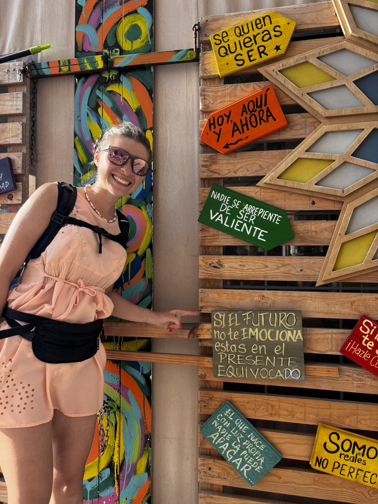
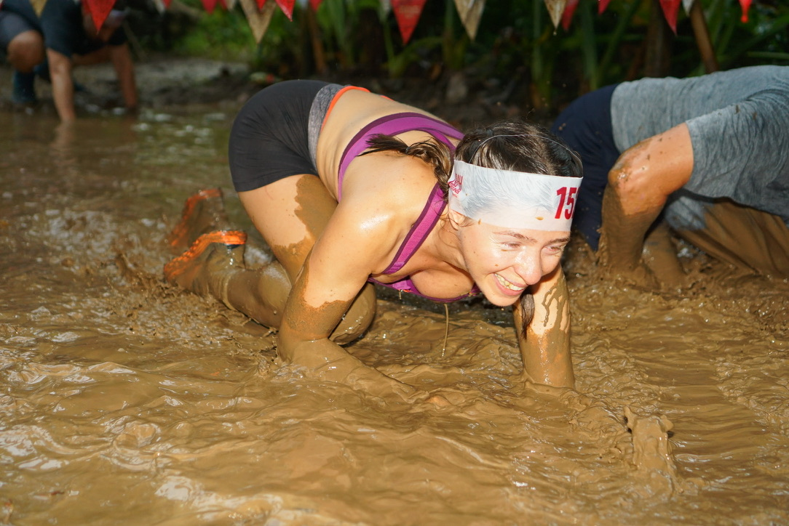
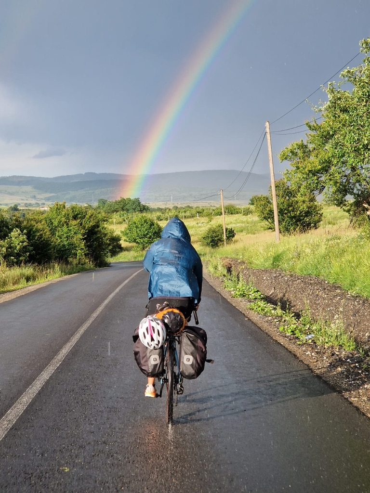
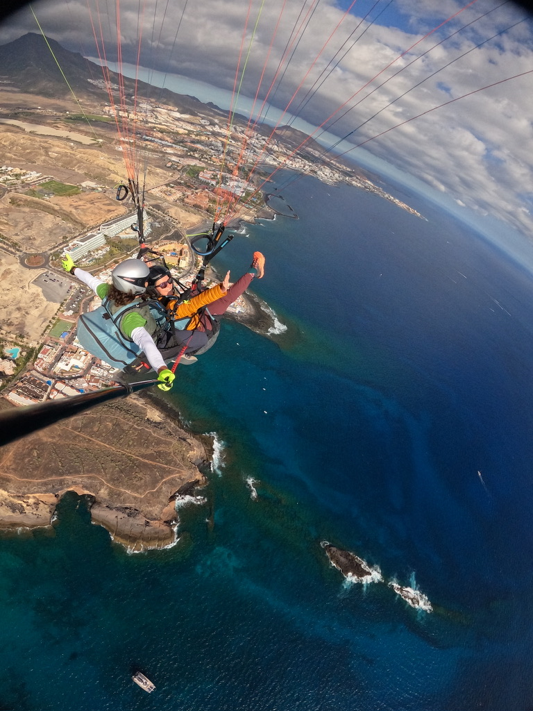

I had been thinking about doing a solo trip for about two years before I actually did one. That's how long it took to get from I want to do this to I booked the flight. Two years of talking myself into it and out of it, on a loop, every time I thought I'd finally decided.
What stopped me wasn't lack of interest. It was the noise — inside my head and from other people — that made it feel like something only a certain kind of woman did. Braver, maybe. More experienced. Someone who already knew what she was doing.
I didn't know what I was doing. I went anyway.
The fear, specifically
People ask what I was afraid of and expect a list of dramatic things — kidnapping, assault, getting lost in a foreign country with no one to call. And yes, those thoughts existed somewhere in the background. But the fear that actually stopped me for two years was smaller and more embarrassing than that.
I was afraid of eating alone in restaurants. Of arriving at a hostel and not knowing what to say. Of looking lost in public. Of being visibly, obviously, alone in a way that other people would notice and judge.
I was afraid of being perceived as someone who had no one.
Looking back, that's the fear that keeps most people from doing it. Not the dangerous stuff — the social stuff. The performance of not being pathetic.

Found this in Tenerife. Nadie se arrepiente de ser valiente. Nobody regrets being brave. It's stuck with me.
What people said
Everyone in my life had an opinion.
My mother thought it was reckless. Not just the solo part — the whole idea of going somewhere unfamiliar without a fixed plan felt irresponsible to her generation in a way that I don't think had anything to do with gender specifically. It was just: you don't do that. You go with people. You stay safe. You come home.
Friends were more mixed. Some were quietly envious and said so. Some were genuinely worried and said that too. A few said things like I could never do that in a tone that sounded both like a compliment and a warning.
A colleague asked me, not unkindly, if I was going through something. As if the only reason a woman would want to travel alone was because something had gone wrong in her personal life.
None of it was malicious. All of it was noise.

A mud run, in a country I'd just arrived in, knowing no one. The social awkwardness of solo travel doesn't register when you're covered in mud and grinning.

Somewhere above a crater lake in the Azores. This was not my first solo trip, but it was the first time I understood what solo travel actually gives you.
The actual trip
I won't tell you it was perfect. It wasn't. The first evening was hard — sitting alone in a city I didn't know, eating dinner at a table for one, very aware of myself in a way that felt uncomfortable. I didn't know if I was supposed to bring a book. I didn't know how long was acceptable to sit there. I paid too quickly and went back to the hostel earlier than I wanted to.
But then a few hours later I was in the hostel common room talking to a woman from New Zealand who was three months into a year-long trip, and a guy from Spain who had quit his job to cycle across South America, and I forgot entirely that I had been anxious.
And the next day I made a decision that had nothing to do with anyone else's schedule or preferences or energy levels. I went left because I wanted to go left. I stopped for an hour at a market because the market was interesting. I walked until I was tired and then I sat down and that was the whole plan, and it was enough, and it was mine.
That feeling — of a day belonging entirely to you — is what no one tells you about before you go. They tell you about the risks. They don't tell you about that.

Cycling through rain toward a rainbow, somewhere in Romania. You go left because you want to go left. Nobody else has a vote.
What changed
Solo travel didn't make me a different person overnight. But it did remove the idea that I needed permission or company to go somewhere. That sounds obvious. It wasn't obvious to me before I did it.
I stopped framing things as I wish I had someone to go with and started framing them as do I want to do this or not. Those are very different questions. The second one has cleaner answers.
The fear before the first trip — all of it, the dramatic version and the embarrassing social version — didn't go away on that trip. It just stopped being the loudest thing in the room. I had evidence now that I could do it, that the worst parts were temporary, and that the thing on the other side of the discomfort was worth it.
That's all confidence is, really. Evidence you've accumulated.
What I'd tell someone about to do their first solo trip
The first evening is the hardest. Give yourself permission for it to be hard. Don't judge the whole experience based on hour three.
Book one or two things in advance — a hostel, maybe an activity — so you have something to aim at when you land. Not because spontaneity is bad but because having nothing to do when you're already anxious makes the anxiety worse.
Bring something to read for the solo restaurant dinners. Not because reading is better than sitting alone with your thoughts — it isn't — but because it gives your hands something to do while the rest of you adjusts.
And ignore what people say before you go. Not because they're wrong to care, but because their worry is about them, not about you. You're the one who has to decide whether the trip is worth the discomfort. Nobody else gets to vote on that.
It is worth it. That part I can promise.

Paragliding over Tenerife. The thing on the other side of the discomfort.